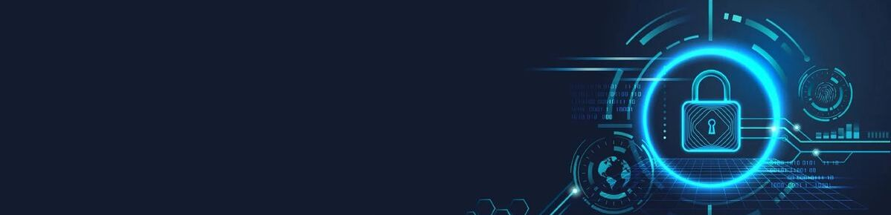
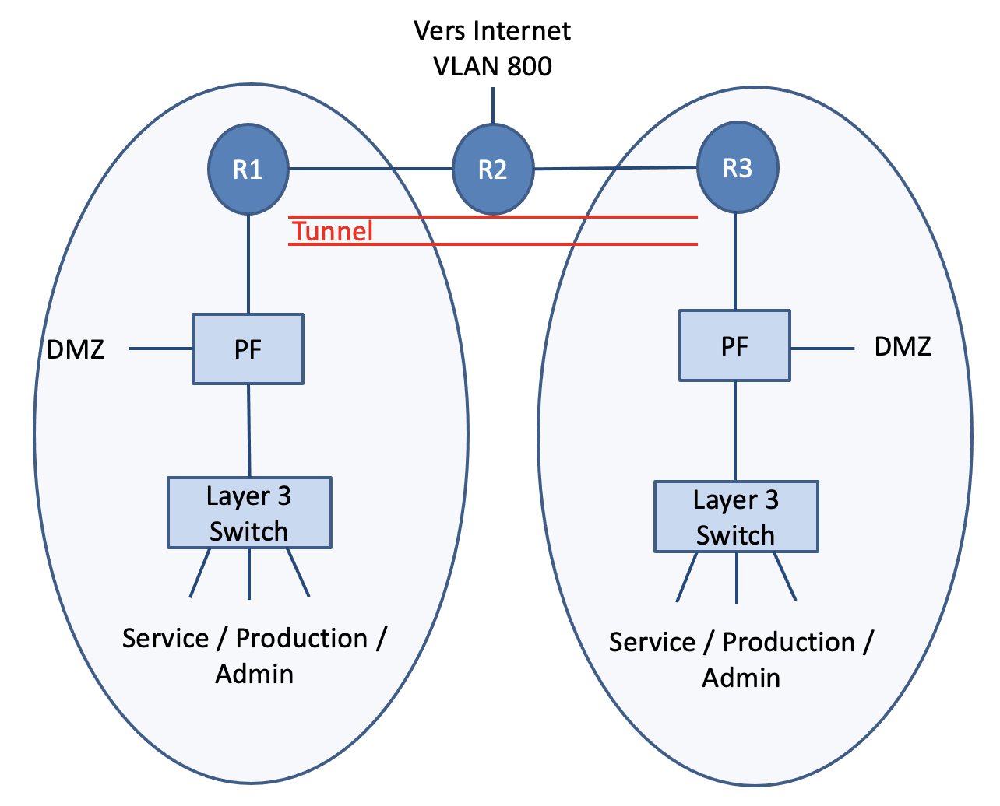
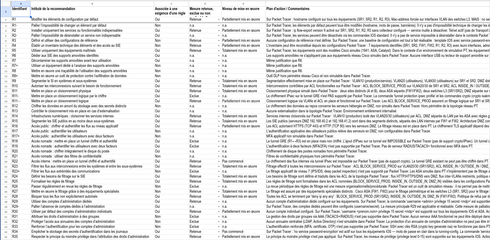

Sécuriser
La compétence Sécuriser regroupe les travaux réalisés cette année autour de la protection des systèmes d'information et des infrastructures réseau. Elle s'articule autour de deux axes complémentaires : une approche offensive, qui m'a permis de comprendre la logique et les méthodes d'un attaquant, et une approche défensive et normative, où j'ai appris à concevoir des infrastructures en respectant des standards de sécurité reconnus.
Ces expériences m'ont permis de poser les premières bases d'une culture de la sécurité, un domaine que j'avais jusqu'alors peu pratiqué et que je souhaite continuer à approfondir.
SAE3 Cyber 04 - Découverte du pentesting
Dans le cadre de ma formation, Monsieur Mercier nous a donné accès à la certification Ethical Hacker de Cisco via la plateforme NetAcad. Ce cours en auto-formation est structuré en 10 modules couvrant l'ensemble du cycle d'un test d'intrusion en Cyber-sécurité : introduction à l'ethical hacking, planification et cadrage d'un pentest, collecte d'informations et scan de vulnérabilités, attaques de social engineering, exploitation de réseaux filaires et sans fil, vulnérabilités applicatives, sécurité cloud et IoT, techniques de post-exploitation, rédaction de rapports et enfin analyse d'outils et de code.
La formation s'appuie sur 34 labs pratiques réalisés sous Kali Linux, une distribution spécialisée dans la sécurité offensive. Ces exercices permettent de manipuler concrètement des outils de pentest dans un environnement isolé, ce qui donne une dimension plus pratique à la certification.
Ce que cette certification m'a apporté avant tout, c'est un lexique et une culture de la sécurité offensive que je n'avais pas. Des termes comme l'OSINT, la reconnaissance passive, les techniques de post-exploitation ou encore les règles d'engagement d'un pentest m'étaient jusqu'alors inconnus ou très flous. Aujourd'hui, je dispose d'un vocabulaire structuré et d'une vision claire du cycle complet d'une évaluation de sécurité, ce qui me permet de mieux appréhender les enjeux de cybersécurité dans mes autres projets.
SAE4 Cyber 01 - Sécuriser un système d’information
Dans le cadre de cette SAÉ réalisée en quadrinôme, j'ai pris en charge la conception de l'infrastructure réseau ainsi que la vérification de sa conformité aux recommandations de l'ANSSI. Le projet consistait à modéliser sous Packet Tracer le réseau d'une entreprise implantée sur deux sites distants, avec une segmentation stricte en trois zones distinctes : Service, Production et Admin. Chaque zone obéit à des règles d'accès précises : seul le réseau Admin dispose d'une connectivité complète vers les autres réseaux, y compris ceux du site distant, tandis que les réseaux Service et Production restent volontairement isolés.

L'interconnexion des deux sites a été assurée par un tunnel sécurisé IPSec GRE, qui représentait la partie la plus exigeante du projet. Cette technologie demande une compréhension fine des protocoles et une configuration minutieuse des paramètres de chiffrement, d'authentification et d'encapsulation. C'est l'étape qui nous a demandé le plus de temps, et elle m'a appris l'importance de structurer ma méthodologie face à une difficulté technique : documenter, tester méthodiquement, et savoir prendre du recul plutôt que de s'obstiner.
Ma spécialisation portait sur la conformité aux recommandations de l'ANSSI. J'ai passé en revue les mesures préconisées, en les classant selon qu'elles étaient applicables, exclues ou non pertinentes dans notre contexte, via une checklist fournis. Cet exercice m'a permis de comprendre qu'une infrastructure réseau ne se juge pas uniquement à son fonctionnement technique, mais aussi à sa capacité à répondre à des standards de sécurité reconnus.


Sur le plan de la progression, ce projet m'a permis de vraiment évolué sur ma compréhension du réseau. Des notions qui me semblaient floues auparavant sont devenues plus compréhensible à mes yeux. En revanche, je mesure aussi les limites de ce projet notamment en cybersécurité : j'en ai acquis la culture, mais j'ai conscience de n'en avoir qu'effleuré la surface. Mais malgré tout cela m'a donné envie de m'y plonger encore plus en détail.